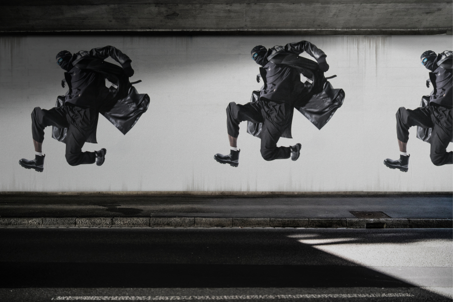

CHAOS website
- Roles: Research, Visual Design, web design, web development
- Tools: Framer
- Year: 2023
- Team: Miguel Plaza, Melanie Plaza, Sandra González
- Link to the project: CHAOS website
Hey there! So, I was the one who created my client's new website. As a one-person team, I had to work extra hard to make sure that the digital experience perfectly captured the brand's identity while being user-friendly. And you know what? I did it all on my first go using Framer, which was pretty exciting!
Now, I'm not gonna lie, it was a little intimidating to use Framer for the very first time. But with a little bit of practice and patience, I was able to pick it up and create a visually appealing interface with a smooth user experience. I created the website's wireframes and layout using my design skills, making sure that every element was consistent with the brand's message and values.
Of course, since this was my first time using Framer, there's always room for improvement. My plan is to continually make improvements to the website over the next several months by gathering user feedback and data. Working hand in hand with my client, we'll be refining the website's functionality, improving its visual aesthetics, and making sure that it continues to meet their specific needs.
Overall, considering that it was my first time using Framer, I'm pretty stoked with how the website turned out. It does an excellent job of presenting the brand's identity, communicating their message, and meeting their needs. And I'm looking forward to continuing to work on this project to create an even better version of their website in the future.